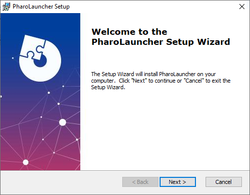
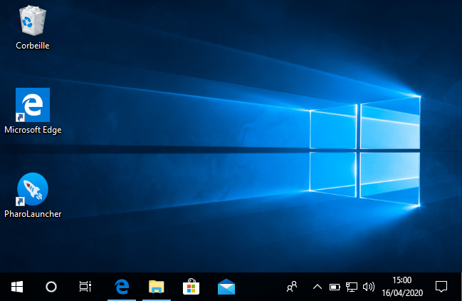
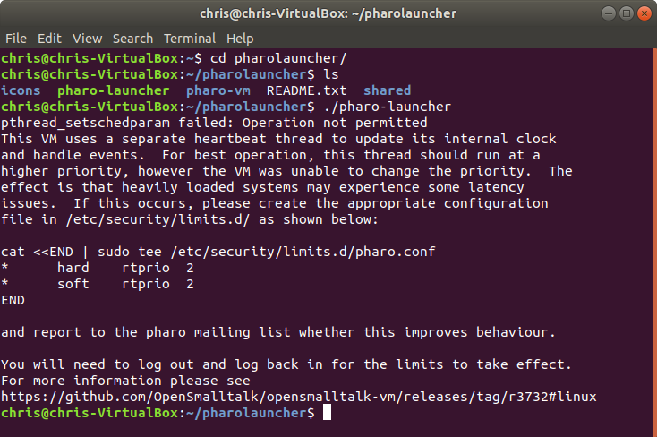

Downloading Pharo Launcher
You can get Pharo Launcher from the Pharo website. The default download is a 64-bit version.
Windows MacOS GNU/Linux GNU/Linux (32bit)
Upgrade notes
Upgrading from Pharo Launcher 1.x to Pharo Launcher 2.x
Pharo Launcher are mostly compatibles between each other. Pharo Launcher introduces a new serialization format for image metadata. Pharo Launcher 1.x uses different files to store metadata:
- meta-inf.ston stores the template used to create the image
- description.txt file contains the description of the image if any
- pharo.version file tells Pharo Launcher what is the pharo version of the image.
Pharo Launcher 2.x uses a single ston file to store all metadata: meta-inf.ston. It stores the origin template, the description and the pahro version as well as other informations like launch configurations (VM to use, VM and image arguments) and initialization script. When using Pharo Launcher 2.x with pre-existing images, meta-data files will be parsed to fetch the metadata and will then be saved in meta-inf.ston with the new format.
It means you will not loose information but meta-inf.ston will be overriden, meaning that going back to Pharo Launcher 1.x will throw error when parsing this metadata file. Images and Virtual Machines files are not impacted by the update. You may encouter problems with Pharo Launcher settings parsing. If so, just delete the problematic settings from the settings file.
Install on Mac OS X
Double-click on the dmg file and drop Pharo Launcher app in Applications folder.

Before being able to run Pharo Launcher, you may need to update temporarily your security settings: if you have Mac OS X 10.8 or higher then you might get the following message:

This is due to the OS X Gatekeeper feature that is designed to discourage users from downloading apps from random locations and possibly installing something bad. Assuming you've downloaded Pharo Launcher from Pharo web site, then you have nothing to worry about, and you just need to bypass this warning:
- Recommended - Right click (or command+click) the application icon and select "open"
- Advanced - Enable all application downloads
- In OS X go to the Apple Menu -> System Preferences -> Security & Privacy -> General
- Unlock the padlock at the bottom of the window, which will require a computer admin password
- Where it says "Allow applications downloaded from:" select "Anywhere"
- OS X will give you a scary warning that is a bit exaggerated. If you're not comfortable with this, use the "right click" method mentioned above.
In all cases OS X will still ask you if you want to open an "unsigned" application the first time it is opened, so new applications that are downloaded can't just start by themselves. Just click on "Open".

Warning: There is a high probability that the very first run of Pharo Launcher does nothing. In this case, just run it a second time and Pharo Launcher will open.
Install on Windows
Run the installer and follow instructions. Be sure to install Pharo Launcher in a place where you have write privileges.



The installer wil create a shorcut on the Desktop as well as an application entry in the Windows menu.

Warning: Antinvirus can prevent Pharo Launcher to behave correctly It has been reported on Windows that the Antivirus prevents Pharo Launcher to download the VMs needed to run images. A workaround is to whitelist PharoLauncher or to temporary disable the antivirus when you need to download new VMs.
Install on Windows Linux Subsystem (WSL)
Thanks to Christopher Fuhrman, the original author of these instructions.
Preparation
- Install and activate WSL following Microsoft’s instructions.
- Install an X Server for Windows. You can use VcXsrv:
- Run XLaunch from the start menu, which invokes a wizard.
- Accept all the defaults on the wizard.
- At the last page of the wizard, click Save configuration specifying
%appdata%\Microsoft\Windows\Start Menu\Programs\Startupto have VcXsrv start automatically when you start Windows.
- You should
export DISPLAY=localhost:0(e.g., in your WSL ~/.bashrc). - Install Mesa with the command
sudo apt install mesa-utils.
This is apparently needed because there are missing libraries for the X11 display used by Pharo. For reference, if you don’t do this step, you’ll get the following message that’s somewhat misleading:
$ ./pharo-ui
could not find display driver vm-display-X11; either:
- check that /home/myusername/pharo-dir/pharo-vm/lib/pharo/5.0-201901051900//vm-display-X11.so exists, or
- use the '-plugins <path>' option to tell me where it is, or
- remove DISPLAY from your environment.
Installation
Note: these instructions are almost the same as for a standard installation on GNU/Linux - Download the latest version of the Linux 64 version of Pharo Launcher to your home directory:
cd
curl -o pharo-launcher.zip -L https://files.pharo.org/pharo-launcher/linux64
- Unzip it (you may need to install the unzip tool with sudo apt install unzip):
unzip pharo-launcher.zip
Normally this will create a ~/pharolauncher directory.
- Run Pharo Launcher with the following command:
pharolauncher/pharo-launcher &
Install on GNU/Linux
- Download the latest version of the Linux 64 version of Pharo Launcher to your home directory:
cd
curl -o pharo-launcher.zip -L https://files.pharo.org/pharo-launcher/linux64
- Unzip the archive in a place where you have write privileges (you may need to install the unzip tool with sudo apt install unzip):
unzip pharo-launcher.zip
Normally this will create a ~/pharolauncher directory. You can also do it through the UI

- Run Pharo Launcher
./pharolauncher/pharo-launcher
